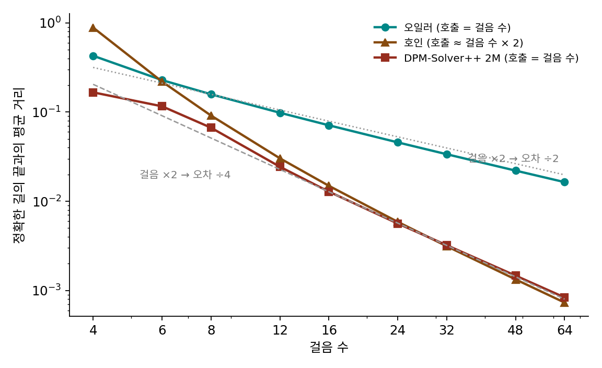

2차 방법: 한 번 더 묻거나, 지난 답을 다시 쓰거나
오일러 걸음은 걸음을 두 배로 늘려야 오차가 절반으로 준다. 오차를 열 배 줄이려면 신경망을 열 배 불러야 한다. 문제는 오일러 걸음이 걸음 처음의 기울기 하나로 걸음 전체를 간다는 데 있다. 길이 휘는 곳에서는 걸음 끝으로 갈수록 그 기울기가 틀린다. 신경망을 부르는 횟수를 크게 늘리지 않고 걸음 안에서 기울기가 바뀌는 것까지 셈에 넣을 수는 없을까?
역사: 기울기를 여러 번 묻는 법과 지난 기울기를 다시 쓰는 법
오일러 방법의 모자람을 메우는 두 갈래 생각은 19세기 끝 무렵에 나왔다. 하나는 한 걸음 안에서 기울기를 여러 번 묻는 것이다. 1900년 무렵 독일의 룽게(Carl Runge)와 쿠타(Wilhelm Kutta)가 이 갈래의 방법들을 세웠고, 그 가운데 가장 단순한 것이 걸음 끝에서 기울기를 한 번 더 읽어 처음 기울기와 평균 내는 호인(Karl Heun, 1859–1929)의 방법이다. 개선된 오일러 방법, 사다리꼴 규칙이라고도 부른다. 다른 하나는 지난 걸음들에서 이미 읽은 기울기를 다시 쓰는 것이다. 애덤스(John Couch Adams)가 바시퍼스(Francis Bashforth)의 모세관 현상 연구에서 물방울 모양을 계산하려고 만든 방법이 1883년 바시퍼스의 책에 실렸고, 이 갈래를 다단계 방법이라 부른다.
디퓨전에서는 두 갈래가 모두 다시 쓰였다. 카라스와 동료들(2022)은 여러 방법을 시험한 끝에 호인 방법이 「잘린 오차와 신경망 호출 수 사이의 뛰어난 절충」이라고 결론짓고, 오일러 방법보다 훨씬 적은 호출로 같은 질에 닿는다고 보고했다. 다만 잡음 크기 0까지 가는 마지막 걸음은 걸음 끝에서 기울기를 읽을 수 없어(0으로 나눈다) 오일러 걸음으로 간다. 루(Cheng Lu)와 동료들은 2022년 DPM-Solver에서 길의 식 가운데 식으로 풀리는 부분은 정확히 풀고 신경망에 기대는 부분만 어림해 10~20번의 호출로 좋은 표본을 냈다. 그런데 글 조건을 세게 거는 생성(가이던스 배율이 큰 생성)에서는 이런 고차 방법들이 불안정해지고, DDIM이 좋은 그림에 100~250걸음을 쓰던 상황이었다. 같은 팀은 같은 해 DPM-Solver++ 에서 신경망의 출력을 잡음이 아니라 원래 그림 x̂₀로 바꿔 읽고, 지난 걸음의 x̂₀를 다시 쓰는 다단계판(2M)으로 가이던스를 건 생성을 15~20걸음에 해냈다.
한 걸음을 들여다보기
두 봉우리 데이터에서 잡음 크기 2인 자리 x = 1에서 잡음 크기 1로 가는 한 걸음을 보자. 정확한 길은 0.9625에 닿는다. 이 자리에서 읽은 x̂₀는 0.537로, 아직 짙은 잡음 탓에 봉우리 1.5보다 한참 가운데 쪽이다.
- 오일러: 읽은 x̂₀ = 0.537과 ε̂을 다음 잡음 크기로 다시 섞어 0.769에 닿는다. 0.194 모자란다.
- 호인: 오일러로 간 자리 0.769에서 신경망을 한 번 더 불러 x̂₀를 읽으면, 잡음이 옅어졌으니 1.143으로 봉우리 쪽에 더 가깝다. 두 자리의 기울기를 평균 내어 처음 자리에서 다시 걸으면 1.072에 닿는다. 0.109 넘친다.
- 2M: 바로 앞 걸음(잡음 크기 4에서 2로 오던 걸음)의 자리에서 읽어 둔 x̂₀는 0.233이었다. 잡음이 줄며 x̂₀가 0.233에서 0.537로 움직였으니, 다음 걸음 동안에도 그 방향으로 더 움직이리라 보고 x̂₀를 늘여 0.689로 쓴다. 그 값을 오일러 걸음의 x̂₀ 자리에 넣으면 0.845에 닿는다. 0.118 모자라지만 신경망은 이번 걸음에 한 번만 불렀다.
호인은 걸음 끝을 미리 가 보고 고치고, 2M은 지나온 길에서 앞을 내다본다. 2M의 걸음을 식으로 적으면 오일러 걸음의 x̂₀만 바뀐다.
x̃₀ 자리에 x̂₀(i)를 그대로 넣으면 (σi+1/σi)xi + (1 − σi+1/σi)x̂₀, 곧 앞에서 본 오일러 걸음 x̂₀ + σi+1ε̂이다. 첫 걸음은 지난 값이 없으니 오일러로 간다.
걸음을 두 배로 늘리면
한 걸음의 결과로는 어느 쪽이 나은지 말하기 어렵다. 걸음 수를 늘려 가며 정확한 길의 끝과의 평균 거리를 재면 차이가 드러난다(출발점 2만 개).
| 걸음 수 | 오일러 | 호인 (호출 수) | 2M |
|---|---|---|---|
| 4 | 0.428 | 0.887 (7) | 0.166 |
| 8 | 0.158 | 0.092 (15) | 0.067 |
| 16 | 0.071 | 0.015 (31) | 0.013 |
| 32 | 0.034 | 0.0031 (63) | 0.0032 |
| 64 | 0.016 | 0.0007 (127) | 0.0008 |
걸음이 넉넉하면 오일러는 걸음을 두 배로 늘릴 때마다 오차가 절반이 되고, 호인과 2M은 4분의 1이 된다. 걸음 수를 두 배로 늘리면 오차가 4분의 1로 주는 걸음법을 2차 방법 (걸음 수 ×2 → 오차 ÷4 / second-order method)이라 하고, 오일러처럼 절반으로 주는 것을 1차 방법이라 한다. 오차가 걸음 크기의 몇 제곱에 비례하느냐가 차수다. 걸음이 적을 때는 이 규칙이 아직 서지 않고, 호인은 4걸음에서 오일러보다도 크게 틀린다.

ML에서: 메뉴의 이름 읽기
ComfyUI 메뉴의 이름은 이 두 갈래로 읽힌다. heun, dpm_2, dpmpp_2s_ancestral 은 한 걸음 안에서 신경망을 두 번 부르는 쪽이고(이름의 2S는 한 걸음 안의 두 단계), dpmpp_2m, dpmpp_3m_sde, lms, ipndm 은 지난 걸음의 결과를 다시 쓰는 쪽이다(M은 다단계, multistep). dpmpp_2m 의 코드는 위 식 그대로다. 지난 걸음의 원래 그림 old_denoised 를 들고 다니며, 첫 걸음과 잡음 크기 0으로 가는 마지막 걸음만 늘이지 않는다. 이름 끝의 sde 는 그 걸음에 앤세스트럴처럼 새 잡음을 섞는 판이다.
문제 9. 속도가 바뀌는 자동차
정지해 있던 자동차가 10초 동안 일정하게 속도를 높여 초속 20 m에 이른다(1초에 초속 2 m씩). 실제로 간 거리는 100 m다. (가) 처음 속도로 10초를 한 번에 계산하면? 5초씩 두 번으로 나누면? (나) 출발할 때의 속도와 10초 뒤의 속도를 평균 내어 한 번에 계산하면? (다) (나)는 왜 정확히 맞는가? 가속이 일정하지 않다면 어떻게 되겠는가?

(가)는 처음 속도가 0이라 0 m예요. 두 번이면 0 × 5 + 10 × 5 = 50 m고요. (나)는 (0 + 20)/2 × 10 = 100 m, 딱 맞아요.

그런데 (나)는 10초 뒤의 속도를 어떻게 알았죠?

문제에 주어졌으니까요… 실제로 계산할 때는 10초 뒤에 어디 있는지도 모르는데 그때 속도를 알 수 없겠네요.

그래서 호인 방법은 먼저 처음 기울기로 끝까지 가 보고, 그 자리에서 기울기를 다시 읽는 거야. (다)는 속도가 시간에 대해 직선이면 평균 속도가 처음과 끝 속도의 평균과 정확히 같기 때문이고. 사다리꼴 넓이가 정확한 거지. 속도가 곡선으로 바뀌면 조금 틀리는데, 그 틀림이 걸음 크기의 세제곱으로 작아.

한 걸음에서 세제곱으로 틀리면, 걸음 수만큼 쌓인 전체 오차는 제곱이 돼요. 걸음을 두 배로 늘리면 4분의 1이죠.
적분 수업에서 직사각형 넓이로 어림한 것보다 사다리꼴로 어림한 게 훨씬 빨리 맞아지던 게 이거였네요.
문제 10. 가우시안 데이터로 차수 재기
데이터가 N(0, 1)이고 x̂₀ = x/(1 + σ²)를 정확히 안다. 잡음 크기 14.61, 출발 자리 √(1 + 14.61²) = 14.64(출발 분포의 표준편차 한 개만큼)에서 출발해 잡음 크기를 같은 비율로 줄이며 걷는다. 정확한 길은 0.9996에 닿는다. (가) 5, 10, 20, 40걸음으로 오일러, 호인, 2M을 걸어 도착 자리가 정확한 값과 얼마나 다른지 구하라. (나) 걸음을 두 배로 늘릴 때 오차가 몇 분의 1로 주는지 견주어라.
정확한 값에서 도착 자리를 뺀 값이 오일러는 0.321, 0.158, 0.078, 0.039예요. 호인은 −0.467, −0.071, −0.014, −0.0033이고 2M은 0.019, −0.022, −0.0062, −0.0015예요.
오일러는 매번 정확히 반이네. 호인은 10에서 20이 4.9배, 20에서 40이 4.4배로 4 근처고, 2M도 20에서 40이 4.1배야.
부호도 봐요. 오일러와 호인은 어느 쪽으로 틀려요?

오일러는 늘 모자라고(+), 호인은 늘 넘쳐요(−). 오일러는 처음 기울기만 써서 작게 가고, 호인은 끝에서 읽은 기울기가 더 커서 평균하면 조금 더 가요. 그런데 5걸음 호인은 −0.467로 오일러보다 더 크게 틀렸어요.

5걸음이면 첫 걸음이 잡음 크기 14.61에서 3.09로 한 번에 내려가요. 그렇게 큰 걸음 끝에서 읽은 기울기도 처음 기울기만큼이나 걸음 전체를 대표하지 못해요. 차수는 걸음이 충분히 작을 때의 이야기예요.
시험 직전 벼락치기로는 공부법을 바꿔도 소용없다는 거랑 같네요. 시간이 어느 정도 있어야 좋은 방법이 좋은 결과를 내요.
문제 11. 같은 호출 수라면
그림 생성 시간은 거의 신경망 호출 수가 정한다. 두 봉우리 데이터(±1.5, 폭 0.3)에서 신경망 호출을 4번, 10번, 20번만 쓸 수 있다고 하자. 오일러는 그 수만큼 걷고, 호인은 걸음 (호출 + 1)/2개로 걷고(마지막 걸음만 한 번 부르므로 호출이 3, 9, 19번), 2M은 그 수만큼 걷는다. 걸음 자리는 카라스 일정이다. (가) 각 걸음법의 정확한 길 끝과의 평균 거리와 골짜기 비율을 구하라(정확한 길의 골짜기 비율 0.7%). (나) 호인의 호출 10번 결과에서 이상한 점은? (위젯 3의 「문제 11 불러오기」로 확인해 보자.)
호출 10번이면 오일러 0.113, 골짜기 4.6%. 호인은 5걸음으로 0.304인데 골짜기는 0.8%예요. 2M은 0.062, 1.5%고요. 2M이 제일 좋고, 호인은 거리로는 오일러보다 나쁜데 골짜기는 제일 비었네요.
평균 거리는 큰데 골짜기는 비어 있다면, 점들은 어디에 있는 거예요?

봉우리에 있긴 한데 정확한 길과 다른 봉우리에 간 점이 많은 거예요. 봉우리 사이가 3이니까, 다른 봉우리로 간 점 하나가 거리를 3씩 올려요. 분포만 보면 멀쩡한데 같은 출발 잡음에서 나와야 할 그림과는 다른 그림이에요.

호출 4번은 더 심해요. 호인 2걸음이 6.95예요. 오일러 0.326, 2M 0.316보다 스무 배 넘게 틀렸어요.
2걸음이면 첫 걸음이 14.61에서 0.029까지 한 번에 가잖아. 그 끝에서 읽은 기울기는 (x − x̂₀)/0.029라서, 봉우리에서 조금만 벗어나 있어도 엄청 커. 그걸 큰 걸음 전체에 평균으로 쓰니까 날아가 버린 거야.
호출 20번이면 오일러 0.052, 호인 0.039, 2M 0.010이에요. 호인은 호출이 넉넉해야 오일러를 이기고, 2M은 호출을 늘리지 않고도 2차의 이득을 가져와요. DPM-Solver++ 논문이 15~20걸음을 겨냥해 다단계판을 낸 까닭이에요.
같은 시간에 문제를 두 번씩 검산하느라 절반만 푸는 것보다, 앞 문제에서 쓴 계산을 다음 문제에 다시 쓰는 게 나은 거네요.